Not every trend deserves a spot in the home.
Some of these 24 ideas are genuinely timeless, dressed up in new language. Others are likely to look dated within a couple of years.
Worth knowing the difference before spending money on either kind.
Here's an honest read on each one.

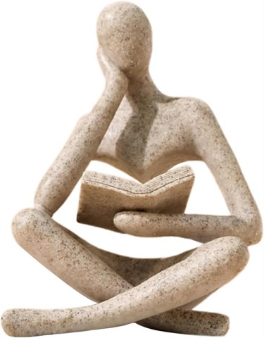
UTTCMK Abstract Reading Thinker Statue, Bookshelf Decor Sculpture Figurine
Shop on Amazon1. Personalized Spaces
A home styled around what actually matters to the people living there, rather than what's currently popular, is the one idea on this list guaranteed never to go out of style.
This isn't really a trend at all, it's the opposite of one.
Worth prioritizing above every other item on this list, every single time.
The safest design decision that exists, full stop.
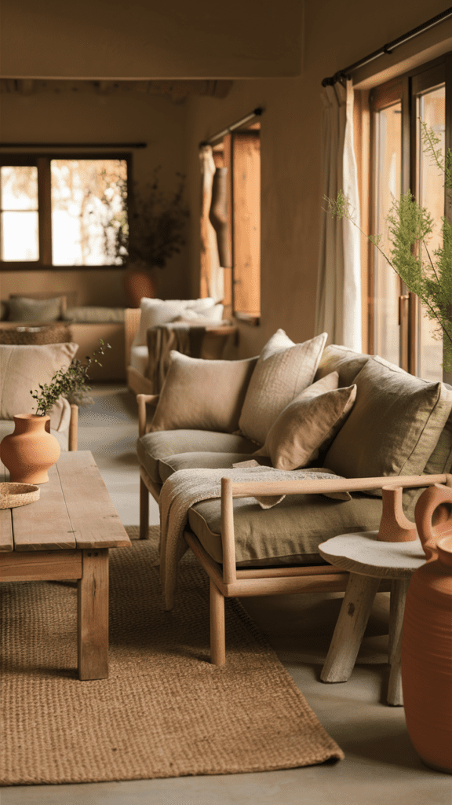
2. Gallery Walls
A curated wall of framed art and photos has cycled through various arrangements for years, grid, salon-style, asymmetrical.
This endures because it's really a format, not a single look, which lets it adapt as taste changes over time.
Worth building gradually rather than assembling all at once.
Flexible enough to stay relevant across many style shifts.
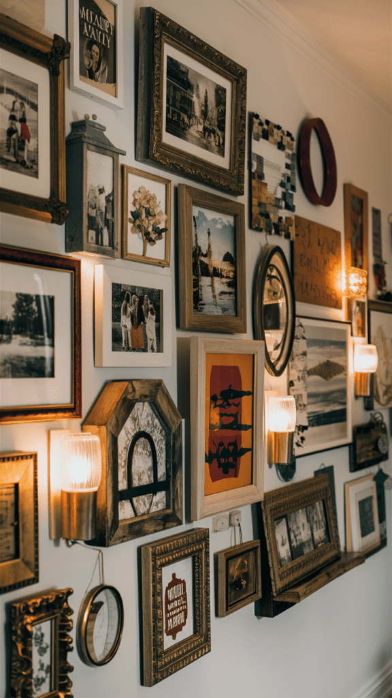
3. Layered Bedding
Multiple textures and weights of bedding add both comfort and visual depth to a bedroom.
This is more of a comfort upgrade than a visual trend, which gives it real staying power beyond any single season.
Worth adopting regardless of whatever else changes in a bedroom's styling.
Practical and low-risk.
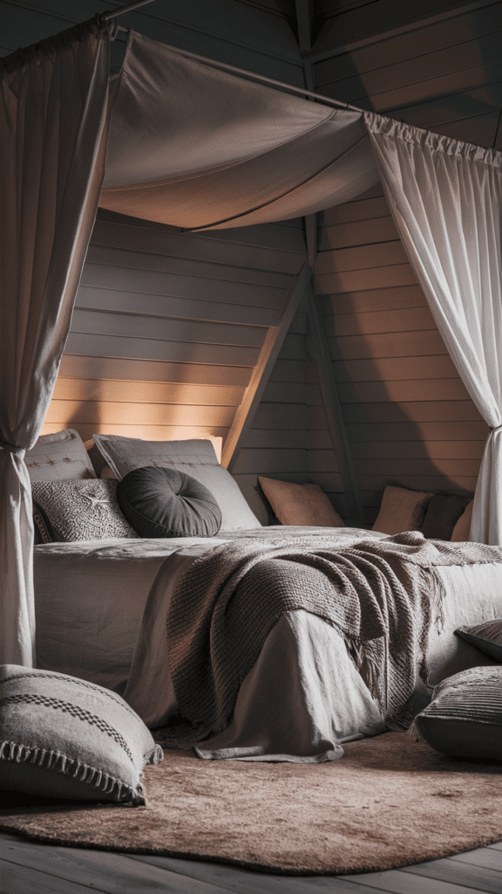
4. Japandi Aesthetics
The blend of Japanese minimalism and Scandinavian warmth has genuine design-philosophy roots beyond a passing trend cycle.
This has already proven durable, having stayed popular well beyond a typical trend's lifespan.
Worth adopting as a broader approach rather than just a specific color palette.
One of the more thoughtfully grounded trends on this list.
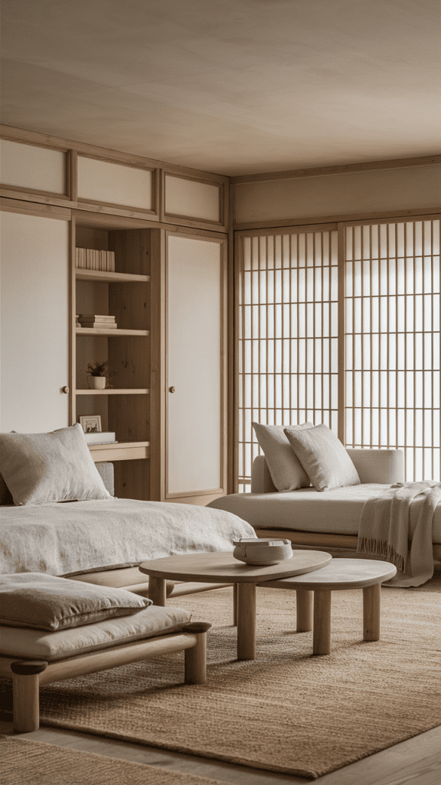
5. Textured Ceilings
A beamed, paneled, or otherwise textured ceiling adds genuine architectural interest to a room most people never think to upgrade.
This is a bigger, more permanent investment than most trends on this list.
Worth it only when planning to stay in the home long enough to enjoy the payoff.
Less reversible than almost anything else here, so worth real consideration first.
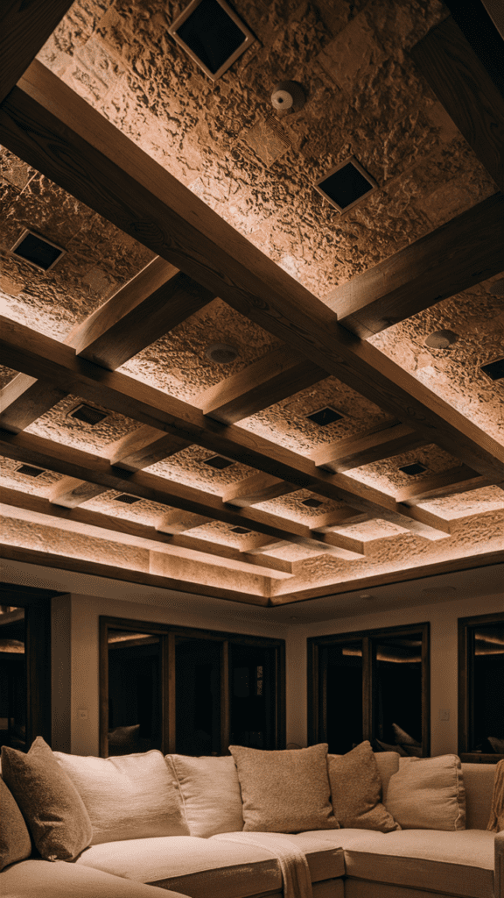
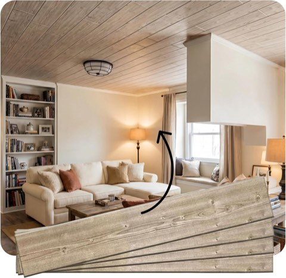
A LA MAISON CEILINGS Faux Wood Ceiling Planks, Rustic Beige, 39 x 6 Inch
Shop on Amazon6. Indoor Gardens
A dedicated plant corner or small indoor garden setup has genuine staying power, tied to the same biophilic principle covered further down this list.
This requires ongoing care, which is the real risk, not the aesthetic, but the maintenance commitment that comes with it.
Worth it for anyone realistic about keeping plants alive long-term.
Stylistically safe, practically demanding.
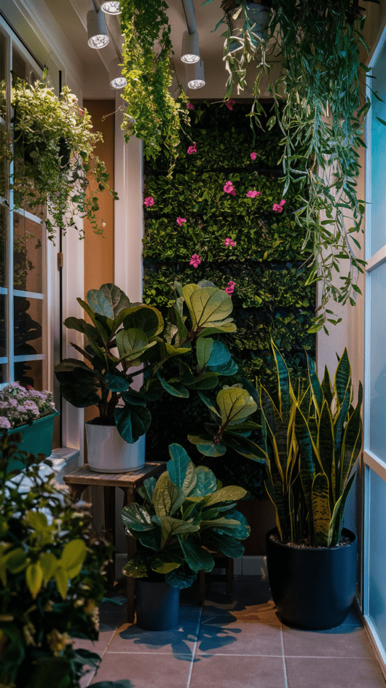
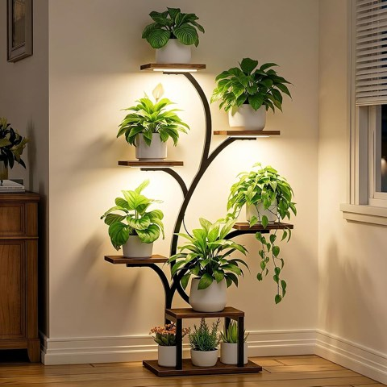
BACEKOLL 7 Tier Plant Stand with Grow Light, 49 Inch Lighted Plant Shelf
Shop on Amazon7. Accent Walls
A bold wall in paint or wallpaper is a relatively low-risk way to try a trend without committing a whole room to it.
This has stuck around because it's inherently a contained, reversible choice anyone can make.
Worth trying in nearly any room, given how easy it is to repaint if the look changes down the line.
One of the better value-to-risk ratios on this entire list.
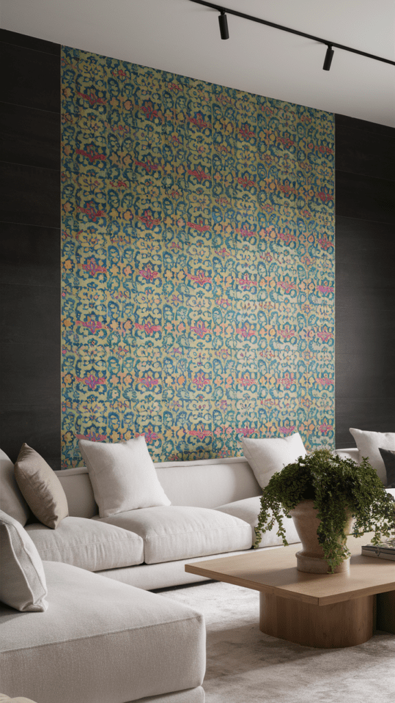
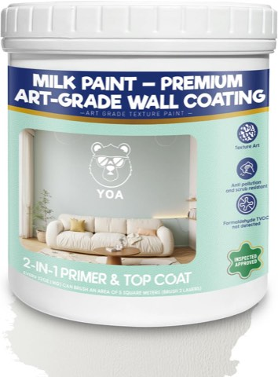
YOA Sheepskin Texture Wall Paint, Manor White, 32 Oz, for Walls and Ceilings
Shop on Amazon8. Neutral Palettes With an Unexpected Twist
A mostly neutral room with one unexpected accent color balances safety with a bit of real personality.
This approach ages well since the base palette stays timeless while the accent can change easily whenever the mood shifts.
Worth adopting as a long-term strategy rather than a one-time styling choice.
Flexible enough to evolve without a full redo.
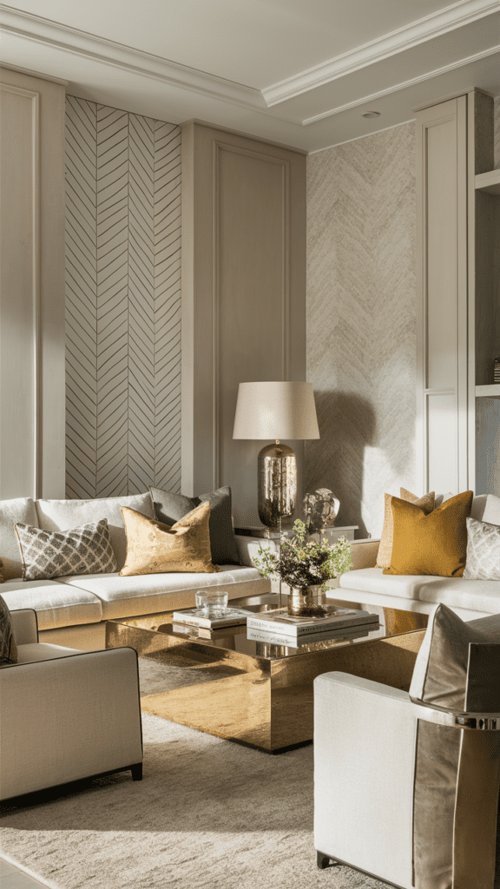
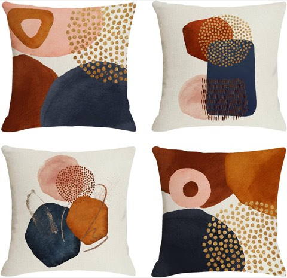
Burnt Orange Abstract Throw Pillow Covers, 18 x 18 Inch, Set of 4, Mid Century Geometric
Shop on Amazon9. Vintage and Antique Finds
Secondhand and antique pieces have outlasted every trend cycle because each one predates the current moment entirely.
This is essentially trend-proof by definition.
Worth prioritizing over new purchases whenever a genuine vintage find is actually available.
One of the safest categories on this whole list.
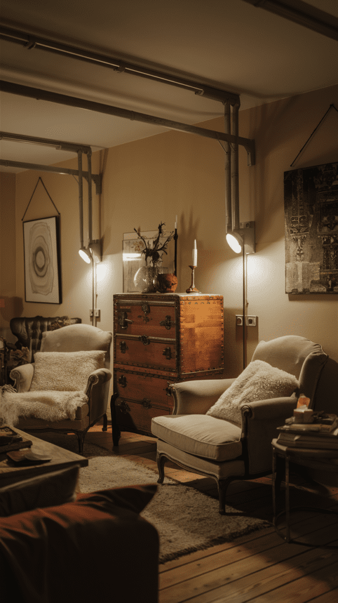
10. Bold Area Rugs
A statement rug in a bold pattern or color is a quicker, cheaper way to update a room than furniture or paint.
This is a relatively low-risk trend to try, since a rug is considerably easier to replace than a sofa.
Worth experimenting with here more than almost anywhere else on this list.
If it fades or feels dated, the cost to change course stays manageable.
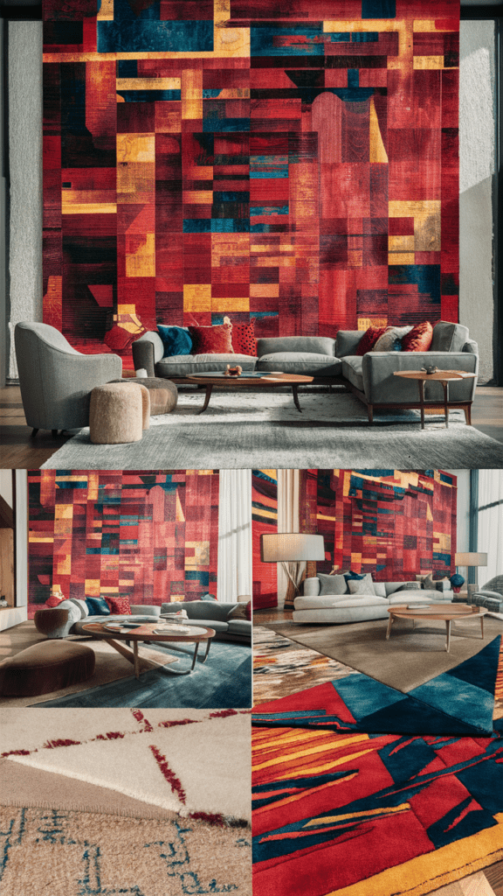
11. Multifunctional Furniture
A sofa bed, a storage ottoman, a desk that folds away, these solve real space problems regardless of whatever style trends are doing.
This is more about function than aesthetics, which gives it real staying power across the board.
Worth prioritizing in any smaller space, trend or not.
A practical investment that happens to also be currently fashionable.
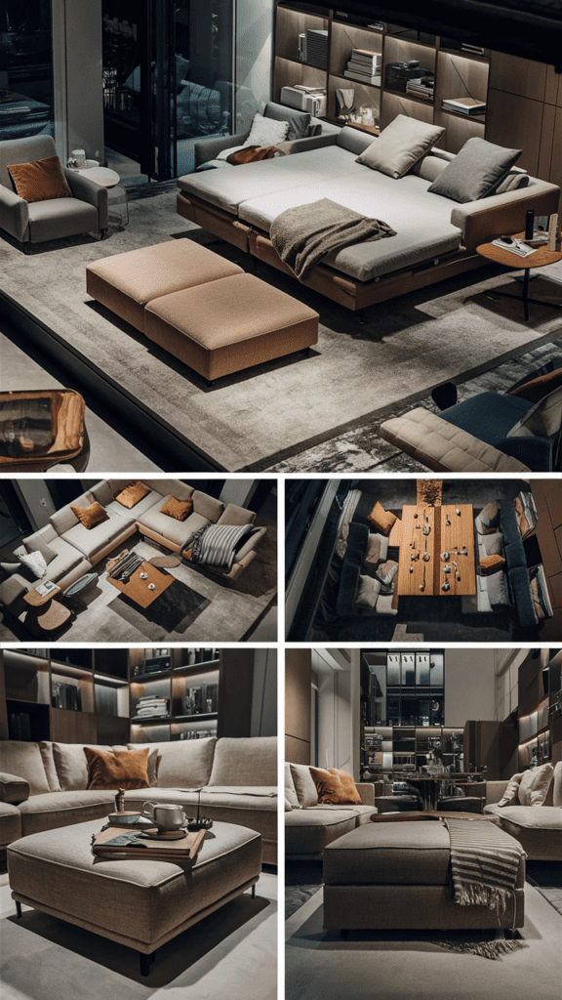
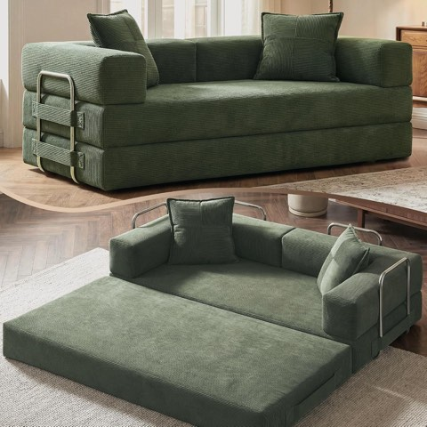
GRUSIGN 78 Inch 5-in-1 Convertible Futon Sofa Bed, Boneless Corduroy, Green
Shop on Amazon
12. Artisanal, Handmade Pieces
Handmade ceramics, woven textiles, and other artisan-made objects have genuine staying power since they're valued for craftsmanship, not trend alignment.
This category rarely goes out of style because each piece is already unique rather than mass-produced.
Worth prioritizing over a mass-market trend item at a similar price point.
One of the safer places to spend on this list.
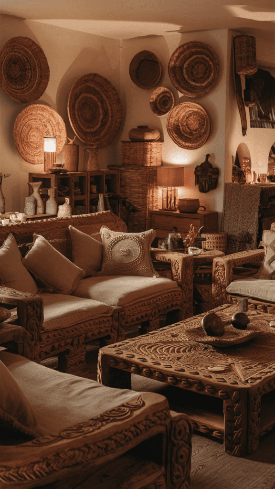
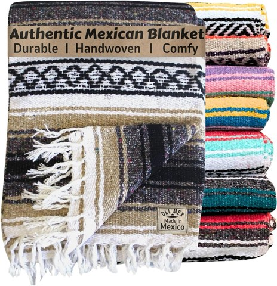
Del Mex Classic Mexican Blanket, Large Authentic Woven Falsa Throw, 70 x 50 Inch
Shop on Amazon13. Open Shelving
This one genuinely cycles, popular for a few years, then criticized as impractical, then popular again right after.
It requires real discipline to keep styled and dust-free, which not every household wants to maintain long-term.
Worth adopting only in a kitchen or bathroom where the upkeep is realistic.
A trend that works better as a choice than a default.
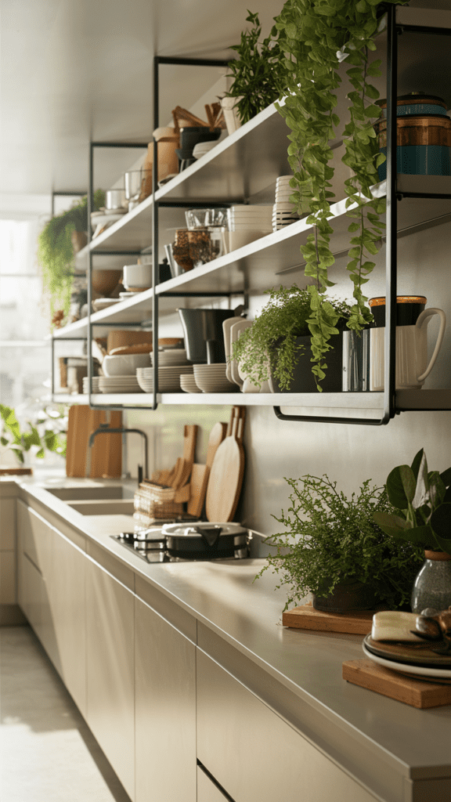
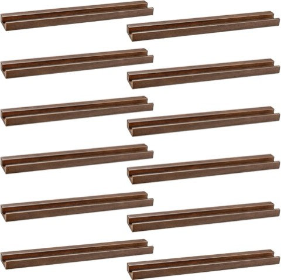
Wood Vinyl Record Wall Mount Shelves, 12 Pack, Floating Album Display Racks
Shop on Amazon14. Custom Built-Ins
Built-in shelving and cabinetry add real value to a home beyond just the current look of the room.
This is a bigger investment than most ideas on this list, but it functions more like a renovation than a decor trend.
Worth it for anyone planning to stay in the home long enough to use the storage daily.
Durable both stylistically and practically.
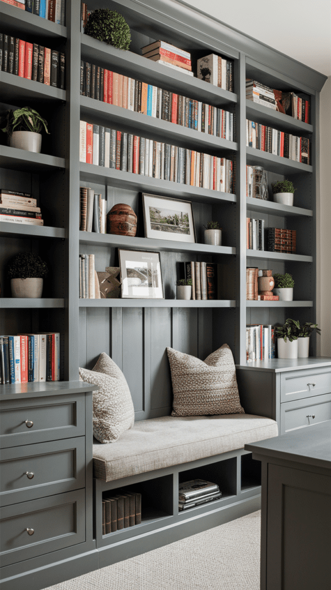
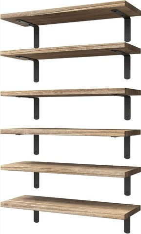
WOPITUES Floating Shelves Set of 6 for Wall Decor and Storage, Rustic Brown
Shop on Amazon15. Layered Lighting
Combining overhead, task, and ambient lighting in one room is a functional upgrade more than it is an aesthetic one.
This has been good design practice for a long time, regardless of what's currently trending at any given moment.
Worth prioritizing in any room, trend cycles aside entirely.
A genuinely safe, practical investment.
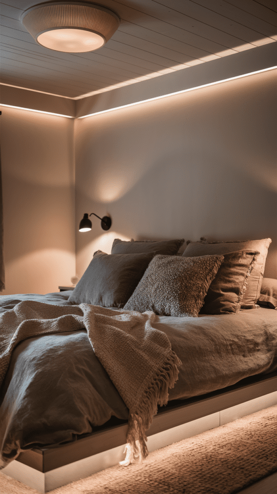
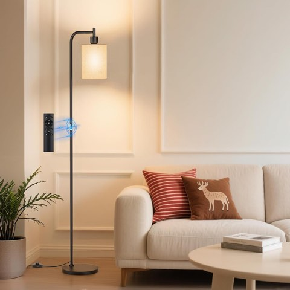
SIBRILLE Floor Lamp with Linen Shade, Dimmable, Remote Control, 3 Color Temperatures
Shop on Amazon16. Biophilic Design
Bringing nature indoors through plants, natural light, and organic materials has deep roots beyond any single design era.
This concept predates its current popularity by decades and will likely outlast it too.
Worth adopting as a long-term approach rather than a quick seasonal update.
One of the more durable trends on this list.
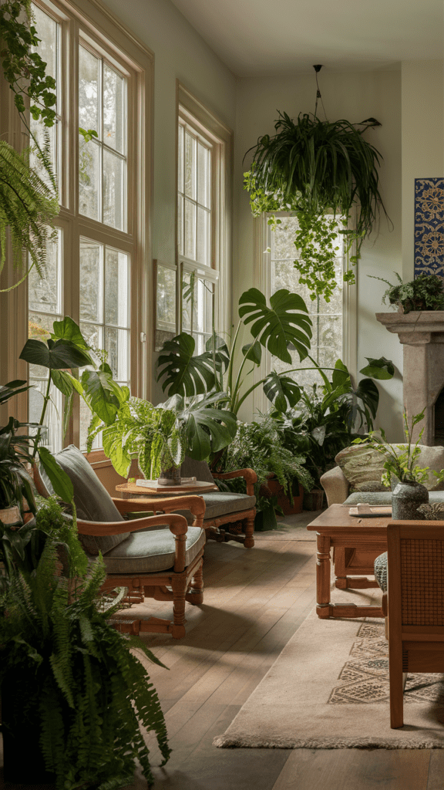
Lucky Bamboo Plants, 3 Stalks, Live Indoor Multi-Height Set
Shop on Amazon17. Smart Technology Integration
Smart lighting, thermostats, and voice-controlled systems keep improving and becoming more standard, not less, with each year.
This is more infrastructure than decor, which means it ages differently than a purely visual trend.
Worth adopting gradually as systems update, rather than all at once.
Low risk of looking dated, higher risk of the tech itself becoming outdated.
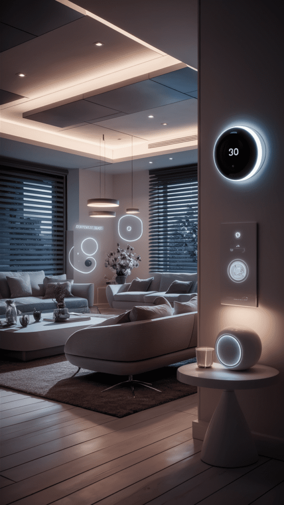
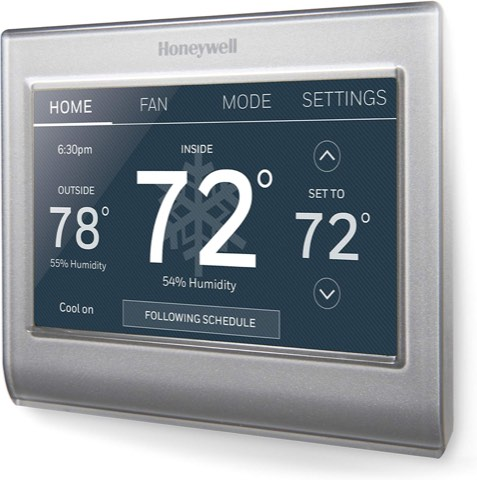
Honeywell Home Wi-Fi Smart Color Thermostat, 7 Day Programmable, Touch Screen
Shop on AmazonGovee Smart Light Bulbs, 2 Pack, A19 LED, 800 Lumen, E26 Base
Shop on Amazon18. A Home Office With Real Personality
Remote work made the home office a permanent fixture, and treating it like a styled room rather than an afterthought has real staying power.
This isn't a passing trend, it reflects a genuine, lasting shift in how homes actually get used day to day.
Worth investing in regardless of what else changes stylistically around it.
A functional trend, not just an aesthetic one.
Mini Desktop Zen Sand Garden with Buddha Decor, for Desk
Shop on AmazonHexagon Cork Bulletin Board Tiles, 10 Pack, Felt Board with 25 Push Pins
Shop on Amazon19. Mixing Textures
Combining materials, wood, wool, stone, metal, isn't really a trend so much as a basic design principle at this point.
This one's permanent. It'll never look dated because it's not tied to a specific aesthetic moment.
Worth adopting immediately and keeping forever, regardless of whatever else is trending around it.
The safest item on this entire list.
LYHome Merino Wool Blanket, Warm and Soft Throw for Bed and Couch, 55 x 79 Inch
Shop on AmazonAbsorbent Ceramic Coasters Set with Holder, 6 Pcs, 4 Inch
Shop on Amazon20. Maximalist Wallpaper
Bold, pattern-heavy wallpaper has swung back hard after years of minimalism dominating the conversation.
This is a genuine commitment, it's expensive to remove and polarizing by design from the start.
Worth it on a single accent wall or in a smaller room like a powder room, where the commitment is considerably lower.
Risky for a whole living room unless the pattern genuinely won't tire quickly.
BOKEBEVE Tiger Floral Peel and Stick Wallpaper, Vintage Orange, 17.5 x 393.5 Inch
Shop on AmazonREDAMANCY Colorful Magnolia Floral Abstract Peel and Stick Wallpaper
Shop on Amazon21. Statement Lighting
An oversized or sculptural fixture has staying power because lighting rarely goes fully out of style the way furniture shapes do.
This is a safer splurge than most trend items on this list.
Worth genuine investment, since a good fixture functions as both decor and lighting for years to come.
One of the better returns on trend-chasing money here.
Modern Cement Pendant Light with Wood Accent, Concrete Farmhouse Fixture
Shop on Amazon47 Inch Oversized Farmhouse Chandelier with Shades, 6-Light
Shop on Amazon22. Curved Furniture
Rounded sofas and curved side tables have had a real moment, and they're striking in photos without question.
This one's riskier, curved pieces are harder to resell and can feel dated once the trend cycle inevitably moves on.
Worth trying in a smaller piece, a side table, an accent chair, rather than committing with a full sofa.
A fun trend, but treat it as an accent, not a foundation to build the whole room around.
Mid-Century Modern Curved Fluted Narrow End Table, Walnut
Shop on AmazonYaheetech Compact Sherpa Accent Chairs, Set of 2, Ivory, for Small Spaces
Shop on Amazon23. Sustainable Materials
Reclaimed wood, recycled glass, and responsibly sourced textiles are less a trend and more a genuine shift in how furniture gets made now.
This isn't going anywhere, if anything, it keeps expanding rather than fading out over time.
Worth prioritizing when buying new furniture anyway, trend or not.
One of the few items on this list that's really a values shift, not an aesthetic one.
24. Earthy Tones
Warm browns, terracotta, and olive have been cycling in and out of style for decades now.
This one's genuinely safe, earthy palettes never fully disappear, they just shift emphasis depending on the moment.
Worth adopting with confidence, especially through smaller items like pillows and throws rather than a full repaint.
Low risk, long shelf life.

Bedsure Soft Olive Green Throw Blanket for Couch, 50 x 60 Inch
Shop on AmazonFinal Thoughts
Not every trend on this list deserves the same level of commitment.
Vintage finds, mixing textures, and personalized spaces are safe bets worth adopting without hesitation.
Maximalist wallpaper and curved furniture deserve more caution, try them small before going all in on either one.
The best approach treats trends as options to borrow from selectively, not a checklist that needs completing.